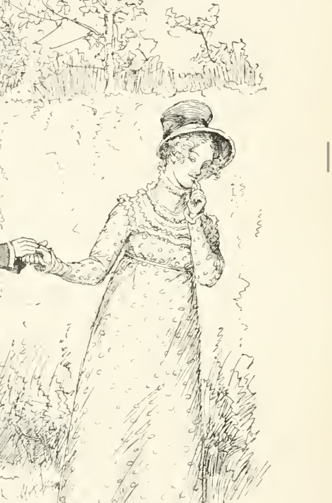
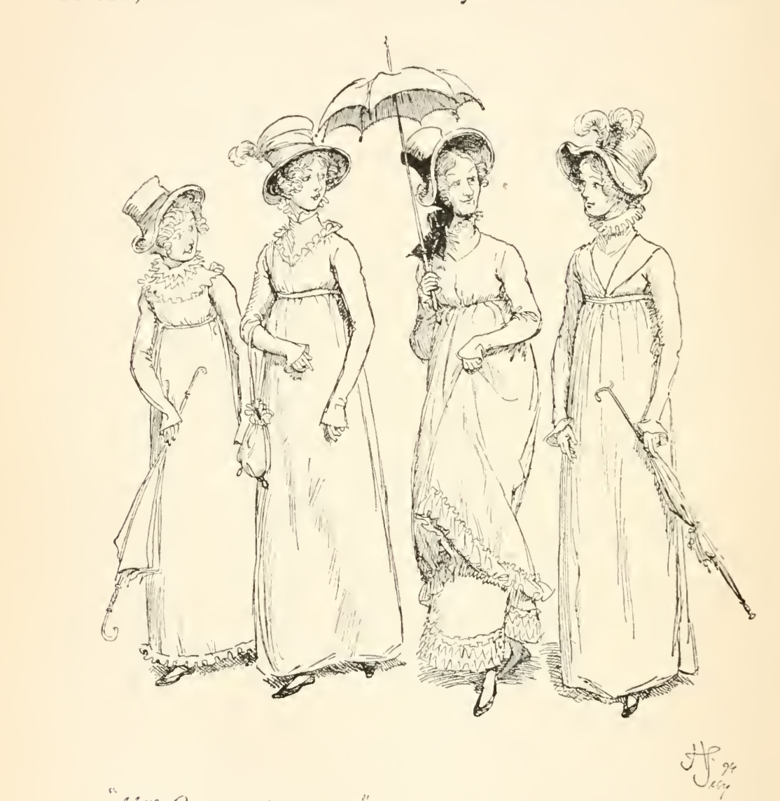

В романе Дж. Остин «Гордость и предубеждение» встречается много героинь, одной из них является Шарлот Лукас – старшая дочка соседа семейства Беннет, Уильяма Лукаса. Отец девушки ранее занимался торговлей в Меритоне, где приобрел некоторое состояние, а также титул баронета[1, С. 24.], но отошел от дел и поселился вместе со своей семьей недалеко от Меритона в дом, получивший название «Лукас Лодж» [1: С. 24 – 25].
Впервые имя Шарлот упоминается в первой главе во время разговора мистера и миссис Беннет по поводу приезда мистера Бингли: «Вот увидите, как сразу поспешат в Незерфилд сэр Уильям и леди Лукас. А ради чего, как вы думаете? Уж, конечно, ради своей Шарлот — вы же знаете, они не очень-то любят навещать незнакомых людей»[1: C. 7]. Таким образом, имя Шарлот появляется раньше, чем сама героиня. Нарраторка характеризует девушку как смышленую и начитанную, что, видимо, можно считать одной из причин, по которой Шарлот и Элизабет подружились: между героинями сложились доверительные отношения, Элизабет делится с Шарлот не только моральными суждениями, но и собственными переживаниями, которые Шарлот, в свою очередь, способна приоритизировать. Так, в пятой главе при обсуждении прошедшего балла Шарлот волнует не тот факт, что мистер Дарси отказался беседовать с миссис Лонг, но то, что герой отклонил предложение станцевать с Элизабет[1: С. 27].

Положительный ответ Шарлот на предложение мистера Коллинза модифицирует отношения героинь. Элизабет не может понять, как ее близкая подруга, умная, воспитанная девушка, может согласиться на брак с ее кузеном, которого героиня считает заносчивым и глуповатым. Элизабет воспринимает решение Шарлот как предательство. К тому же, Элизабет отказала мистеру Коллинзу. Важно еще учитывать, что Уильям является единственным наследником состояния мистера Беннета, следовательно, в случае смерти последнего, хозяйкой поместья Лонгборн стала бы Шарлот, что ставит под угрозу положение всех дочерей Беннетов. Однако Шарлот поступила так вовсе не из желания нанести вред подруге, что подтверждается ее опасениями насчет реакции Элизабет после согласия на помолвку с мистером Коллинзом, а из необходимости. Для Шарлот важен брак как социальный институт и лифт, а личностные качества супруга для нее не имеют значения. Позиция девушки по поводу брака впервые проявляется в ее диалоге с Элизабет насчет отношений Джейн и мистера Бингли. Шарлот убеждена, что счастливый брак зависит целиком от удачи, в то время как Лиззи с ней категорически не согласна в этом вопросе. Этот эпизод показывает отношение обеих героинь к браку, которое впоследствии раскрывается.
Для Шарлот важно гарантировать себе безопасное будущее, и ради этого она готова закрыть глаза на все недостатки будущего супруга. Семья девушки не богата. В девятой главе при разговоре миссис Беннет и Элизабет упоминается, что Шарлот не осталось обедать с семейством подруги, потому что ей надо было вернуться домой помочь приготовить пирог: «Нет, она спешила домой. Наверно, ей нужно было там помочь в приготовлении пирога. Что касается меня, мистер Бингли, то я держу у себя таких слуг, которые сами справляются со своей работой. О да, мои девочки воспитаны по-другому» [1: С. 61]. Несмотря на то, что информацию, полученную от миссис Беннет, нельзя считать полностью достоверной, в тексте можно найти другие подтверждения небольшого состояния семьи Лукас . Например, в двадцать второй главе после сватовства мистера Коллинза: «Немедленно было испрошено согласие сэра Уильяма и леди Лукас, данное ими с полным восторгом. Положение мистера Коллинза, которое он занимал даже в настоящее время, делало эту партию весьма удачной для их дочери, за которой они могли дать очень небольшое приданое.» [1: С. 171]. В Англии в конце XVIII века у незамужней девушки почти не было шансов выжить самостоятельно. Состояние родителей женщина получить не могла, в лучшем случае у нее была возможность стать гувернанткой, однако для этого необходимо было иметь хорошее образование[2], чем Шарлот, несмотря на ее начитанность и смышленость, похвастаться не могла. Также у Шарлот есть несколько сестер, которые еще не дебютировали в обществе, а для этого им необходимо иметь достаточно много денежных средств. Кроме того, девушкам из бедных семей было гораздо сложнее найти мужа, поэтому брак Шарлот с мистером Коллинзом мог улучшить положения ее сестер и помочь им встретить хорошую партию. К тому же, во время действия романа героине уже было 27 лет[1: С. 25], что по меркам того времени для незамужней девушки было достаточно много, ведь даже Джейн, которой только исполнится 23 года, пророчат судьбу «старой девы» [1: С. 304]. При этом, подчеркивается, что Шарлот не была красавицей. Миссис Беннет называет ее дурнушкой [1: С. 61], а сама героиня считает себя «лишенной привлекательности»[1: С. 171]. Таким образом, брак с мистером Коллинзом был наилучшим выходом для Шарлот. Она прекрасно осознавала свое положение, поэтому не стремилась к любви, а лишь хотела обеспечить себе безопасное будущее и прожить спокойную жизнь: «Несмотря на то, что она была невысокого мнения о браке и о мужчинах вообще, замужество всегда было ее целью. Только оно создавало для небогатой воспитанной женщины достойное общественное положение, в котором, если ей не суждено было найти свое счастье, она хотя бы находила защиту от нужды»[Там же]

В некотором смысле, Шарлот выступает двойником Элизабет. Обе девушки умны, начитанны, воспитаны, при этом их семьи не могут похвастаться большим богатством, поэтому для того, чтобы обеспечить безбедное и благополучное существование, обеим необходимо выйти замуж. Однако, в то время как Шарлот зациклена исключительно на обеспечении себя и своей семьи гарантиями безопасного будущего, вследствии чего делает выбор в пользу мистера Коллинза, понимая, что никогда не полюбит его и что он будет всегда тяготить ее, Элизабет выбирает себе в мужья того, с кем она уверена, что будет счастлива, и отвергает тех, чье общество ей невыносимо. Выступая двойником Элизабет, Шарлот подсвечивает ее качества, которые авторка считала важными, а именно ее чувство собственного достоинства и смелость, благодаря чему героиня выглядит еще более благородной в глазах читателей.
Обратим внимание, как конструируется образ Шарлот. Он состоит из нескольких точек зрений на героиню. Превалирующими являются точки зрения миссис Беннет и Элизабет. Миссис Беннет – первая, кто упоминает Шарлот, а также впоследствии дает характеристику ее внешности и немного раскрывает положение ее семьи. После известия о женитьбе мистера Коллинза на Шарлот в глазах миссис Беннет героиня предстает ловкой соперницей, забирающей у ее дочерей женихов[1: С. 194]. Точка зрения Элизабет сильно отличается. В начале она видит в Шарлот близкую подругу и единомышленницу, однако после ее брака с мистером Коллинзом Элизабет сильно разочаровывается в подруге и перестает ее понимать. Таким образом, с точки зрения мисс Беннет, свадьба Шарлот с мистером Коллинзом страшна, так как это может навредить ее дочерям, а с точки зрения Элизабет она ужасна, так как Шарлот предает их общие, по мнению Лиззи, убеждения. Интересно то, что единственным разом, когда в тексте появляются мысли Шарлот в виде рецепции нарраторки, является эпизод после принятия решения о браке с мистером Коллинзом. При описании реакции семьи на эту новость упоминаются и мысли девушки. До этого ее позиция проявлялась, в основном, в диалогах с Элизабет, однако после свадьбы Шарлот с Уильямом в их отношениях появилась натянутость и прежняя близость исчезла, а вместе с ней и разговоры. После этого о мыслях и самочувствии Шарлот можно узнать только по немногочисленным догадкам Элизабет, которые она не обсуждает с подругой. Вероятно, добавить в текст мысли Шарлот было необходимостью, так как без них читателям было бы сложнее понять, почему она приняла такое решение, следовательно, противопоставление Шарлот и Элизабет было бы не таким явным.
Библиография:
Остин Дж. Гордость и предубеждение / Подг. изд. Н. М. Демурова, И. С. Маршак, Б. Б. Томашевский; отв. ред. М. П. Алексеев; пер. с англ. И. С. Маршака // Литературные памятники. М.: Издательство «Наука», 1967.
Созинова К. А. Женское образование в Англии на рубеже XVIII-XIX вв. на примере романов Джейн Остен //Педагогическое образование в России. 2015. №. 11. С. 264 – 270.